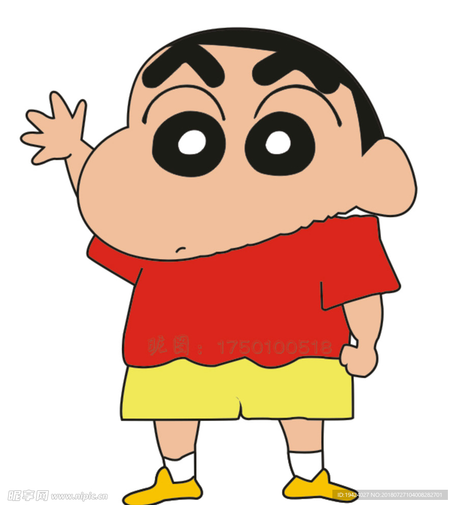
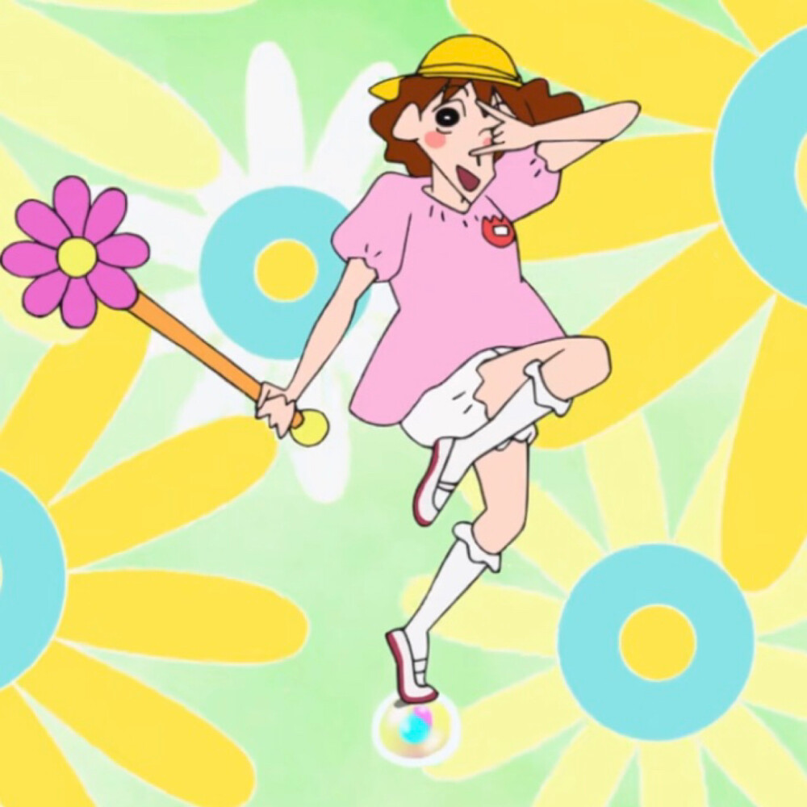
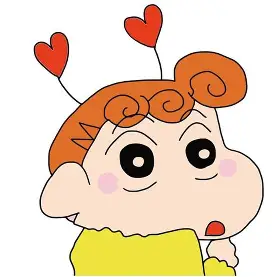
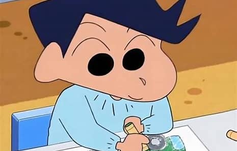

野原新之助
主角 / 5岁男孩本作主人公，就读于双叶幼儿园向日葵班。性格早熟，喜欢搭讪美女，常说一些令人哭笑不得的话。虽然调皮捣蛋，但心地善良，关键时刻非常可靠。
年龄:
5岁
爱好:
看动感超人、吃小熊饼干
口头禅:
"你回来了~"
"动感光波！哔哔哔哔哔~"

野原美伢
母亲 / 家庭主妇小新的妈妈，29岁全职家庭主妇。性格急躁，爱唠叨，经常被小新气得火冒三丈。虽然总是抱怨，但非常爱家人，是家庭的支柱。
年龄:
29岁
爱好:
逛街、抢特价商品
特点:
爱睡懒觉、怕胖
"小新！你又给我捣乱！"
野原广志
父亲 / 上班族小新的爸爸，35岁上班族。双叶商事营业部课长，有32年房贷和车贷。性格温和，有点好色，最大的特点是脚臭。深爱家人，是家里的经济支柱。
年龄:
35岁
爱好:
喝啤酒、看棒球
特点:
脚臭、有房贷
"啊~~下班后喝一杯啤酒最舒服了！"

野原向日葵
妹妹 / 婴儿小新的妹妹，昵称小葵。虽然还是婴儿，但已经展现出对亮晶晶的东西（尤其是珠宝）的强烈执着，性格有点像小新，未来可能比小新还让人头疼。
年龄:
0-1岁
爱好:
亮晶晶的东西
特点:
看到珠宝就异常激动
"啊~亮晶晶！"
小白
宠物狗野原家养的狗，小名小白。被小新从垃圾堆捡回来。非常聪明，几乎能做所有家务，甚至能买菜、做饭。性格温顺，是家里最靠谱的成员之一。
品种:
棉花糖（混种）
特长:
做家务、买菜
特点:
聪明、温顺
"汪汪！"

风间彻
同学 / 优等生小新的同学，家境优越的优等生。喜欢装成熟，但内心其实是个幼稚的孩子。表面上讨厌小新，实际上很重视这段友谊。有很多补习班，压力很大。
年龄:
5岁
爱好:
学习、英语会话
特点:
优等生、有点傲娇
"小新！你不要总是这样！"
角色分组
野原一家
小新、美伢、广志、小葵和小白组成的温馨家庭
春日部防卫队
小新、风间、正男、阿呆和妮妮组成的"正义"队伍
双叶幼儿园
吉永老师、松坂老师、园长等幼儿园相关角色
邻居与朋友
隔壁大婶、酢乙女爱等周边角色